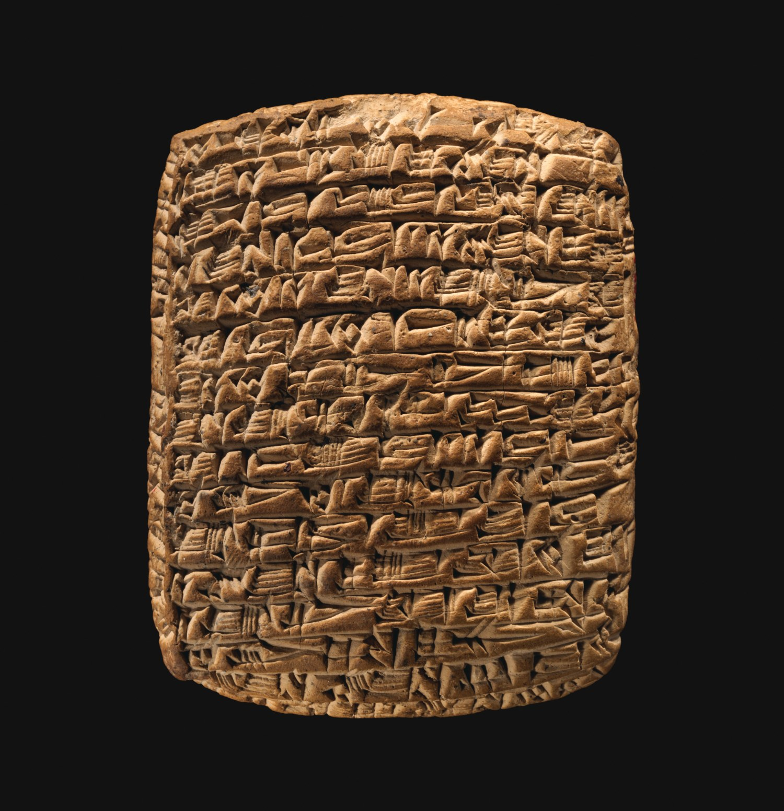
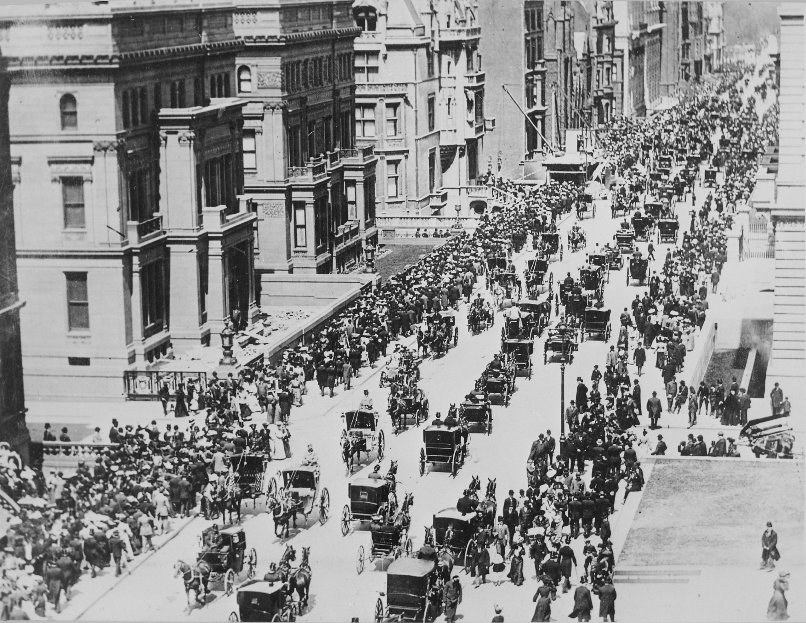
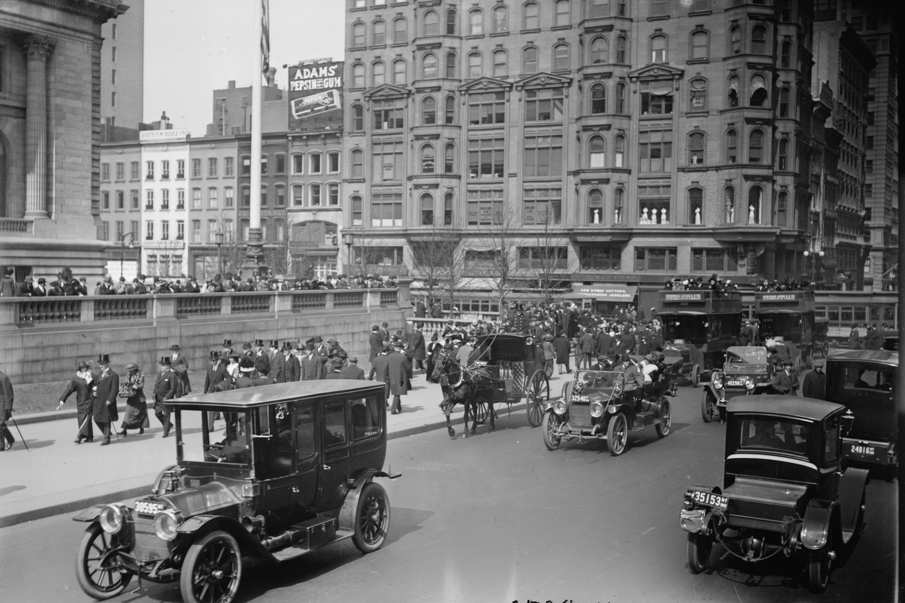

Yapay zekâ iş dünyasını ve ticaretin geleceğini nasıl şekillendirecek?
GeçmişHızlanmaBugünGelecekYol haritası
Halil Aydın
Yüksek Bilgisayar Mühendisi · BSS Teknoloji CEO'su · YENİAD Başkan Yardımcısı
12 Kasım 2026 · YENİAD
Bugünkü yolculuğumuz
Beş bölümde ticaretin dünü, bugünü ve yarını
01
Geçmiş
Ticaretin araçları 4.000 yılda nasıl değişti?
02
Hızlanma ve geçiş
Teknolojiler ne hızla yayılıyor? Geçiş nasıl yaşanıyor?
03
Bugün: ajanlar
Yapay zekâ ajanı nedir, nasıl çalışır?
04
Gelecek
Kurumlar ve liderler neyi öngörüyor?
05
Yol haritası
Hızla değişen dünyada değişmeyecek olan ne?
Sunumdaki her rakamın kaynağı slaytın altında yer alıyor. Tahminler ayrıca “tahmin” olarak işaretlendi.

Kültepe'den Asurlu bir tüccar mektubu · Metropolitan Museum of Art, 66.245.1 (CC0)
Kayseri · Kültepe (Kaniş) · MÖ 20.-19. yüzyıl
Bilinen en eski ticaret arşivlerinden biri Anadolu'da
Asurlu tüccarlar eşek kervanlarıyla kalay ve kumaş getirdi, Anadolu'da gümüş ve altın karşılığında sattı. Mektuplarını kil tabletlere yazdılar.
Arşiv
23.000+
kil tablet: mektup, sözleşme, hesap
Ticaret
Kalay, kumaş → gümüş
Asur ile Anadolu arasında
Tescil
2015
UNESCO Dünya Belleği
“Gönderdiğin ince kumaştan daha çok yap.” Tüccar Puzur-Aššur, Waqqurtum'a yazdığı mektupta satışların bu kalitedeki kumaşla arttığını anlatıyor.
BilgiGüvenAlışveriş
Ticaretin bu üç temeli 4.000 yıldır değişmedi. Değişen, onları taşıyan araçlar oldu.
UNESCO Dünya Belleği: Kültepe Eski Asur Tüccar Arşivleri (2015) · Hamburg Üniversitesi CSMC (2024) · Archaeology Magazine, “Assyrian Women of Letters” (C. Michel, 2023)
4.000 yılda ticaretin araçları
Öz aynı kaldı, araçlar değişti
Her yeni araç bilgiyi, parayı ve güveni daha hızlı ve daha uzağa taşıdı.
Yazılı sipariş, sözleşme ve hesap kaydı
Kil tablet
MÖ 1900
MÖ 7. yy.
Madeni para
Lidya (Sardes, Manisa): ölçülebilir, taşınabilir değer
Cevahir Bedesteni: denetimli, güvenli çarşı
Kapalıçarşı
1461
1844
Telgraf
Fiyat ve sipariş bilgisi dakikalar içinde şehirler arasında
Hareketli montaj hattı: daha ucuz, daha hızlı üretim
Seri üretim
1913
1995
E-ticaret
Amazon ve eBay yayında: Vitrin internete taşınıyor
Mağaza ve ödeme cebe giriyor
Akıllı telefon
2007
2022
Üretken yapay zekâ
İlk kez araç bilgiyi yalnızca taşımıyor; işliyor
Archaeology Magazine (2023) · British Museum, Lidya sikkeleri · İstanbul Esnaf ve Sanatkârlar Odası, Kapalıçarşı tarihçesi · Library of Congress (Morse, 1844) · Ford Motor Company arşivi (1913)


1900
New York, 5. Cadde. Fotoğraftaki tek otomobili bulabilir misiniz?
1913
Aynı cadde. Şimdi de tek atlı arabayı bulun.
Teknoloji nasıl yayılır?
13 yılda cadde tamamen değişti
Yeni teknolojiler genellikle S biçiminde bir eğriyle yayılır: önce yavaş, kritik eşiği geçince çok hızlı, sonra doygunluk.
Hemingway'in deyişiyle: “Önce yavaş yavaş, sonra birdenbire.”
New York, 5. Cadde · 1900: ABD Ulusal Arşivleri · 1913: Library of Congress, Bain Koleksiyonu (kamu malı)
Hızlanma · Uzun dönem verisi
Yeni teknolojiler giderek daha hızlı yayılıyor
ABD'de teknolojiyi kullanan hanelerin oranı (%)
Hanelerin %10'undan %50'sine ulaşma süresi
Sabit telefon 1903 → 194643 yıl
Elektrik 1908 → 192517 yıl
Renkli TV 1966 → 19748 yıl
İnternet 1993 → 20029 yıl
Cep telefonu 1994 → 20028 yıl
Eğriler sağa doğru dikleşiyor: İnternet ve cep telefonu, sabit telefondan yaklaşık 5 kat hızlı yayıldı.
Our World in Data, “Technology adoption by households in the United States” (Comin ve Hobijn, 2004 ve diğer kaynaklar) · Seriler hanelerin %10'una ulaşıldığı yıldan başlar
Hızlanma · Yapay zekâ
Yapay zekâ, PC'den ve internetten hızlı yayılıyor
ABD'de kullanan yetişkinlerin oranı (%) · teknoloji çıktıktan sonra geçen yıl
Aynı yaşta karşılaştırma: Çıkışından 4 yıl sonra yetişkinlerin %60'ı yapay zekâ kullanıyor. İnternette bu oran %36, PC'de (3. yıl) %20 idi.
Hanelerin yarısına ulaşma süresi (ABD)
Elektrik çağı42 yıl
Kişisel bilgisayar20 yıl
Masaüstü internet12 yıl
Mobil internet6 yıl
Yapay zekâtahmin~3 yıl
BOND / Morgan Stanley (Mayıs 2025). Yapay zekâ değeri ölçüm değil, tahmindir.
ChatGPT: haftada 900 milyon kullanıcı
St. Louis Fed ve Harvard, GenAI Adoption Tracker (Ağustos 2026); PC ve internet: ABD Nüfus Bürosu, ITU · BOND, Trends – Artificial Intelligence (Mayıs 2025) · OpenAI (27 Şubat 2026)
Hızlanma · Maliyet
Değerli olan ucuzlayınca her yere girer
Dün · Alüminyum
1859
Bir librenin (~450 gram) fiyatı yaklaşık 17 dolar; gümüşle aynı. Rivayete göre III. Napolyon önemli misafirlerine alüminyum çatal bıçak sunuyor.
1884
Washington Anıtı'nın tepesine “değerli metal” olarak konuyor.
1886 → 1891
Elektrolizle ucuz üretim yöntemi bulunuyor; libresi 1 doların altına iniyor.
Bugün
Kullanıp attığımız folyo, içecek kutusu.
Bugün · Yapay zekâ
Kasım 2022
20 $
Ekim 2024
0,07 $
GPT-3.5 düzeyinde bir modeli kullanmanın maliyeti (1 milyon token başına) iki yılda yaklaşık 280 kat düştü.
Epoch AI'a göre aynı performansın fiyatı, göreve bağlı olarak yılda 9 ile 900 kat arasında düşüyor.
Token: yapay zekânın okuyup yazdığı metin birimi. 1 milyon token yaklaşık 750 bin İngilizce kelimeye karşılık gelir.
Science History Institute, Distillations · ABD Millî Parklar İdaresi (NPS) · Stanford HAI, AI Index 2025 · Epoch AI, LLM inference price trends (Mart 2025)
Hızlanma · Altyapı
Modelleri eğitmek için kullanılan hesaplama gücü yılda yaklaşık 5 kat artıyor
Önemli yapay zekâ modellerinin eğitim hesaplaması (FLOP, logaritmik ölçek)
Yatırım
Dört teknoloji şirketinin yapay zekâ altyapı harcaması
2025
~410
2026 (plan)
~725-750
milyar dolar · Microsoft, Alphabet, Amazon, Meta
FLOP: bilgisayarın yaptığı tek bir aritmetik işlem. Logaritmik ölçekte her çizgi 100 kat artış demektir.
Epoch AI, Notable AI Models veri tabanı (Kasım 2026) ve Trends (Şubat 2026); model değerleri kestirimdir · Şirketlerin 2026 3. çeyrek açıklamaları (Ekim 2026), Tom's Hardware derlemesi
Hızlanma · Türkiye
Türkiye'de bireyler hızla benimsiyor, şirketler daha yavaş
TÜİK, Yapay Zekâ İstatistikleri 2025 ve 2026 (Ekim 2026) · Eurostat (11 Aralık 2025; AB'nin 2026 verisi henüz yayımlanmadı)
Bugün · Temel kavram
Yapay zekâ ajanı nedir?
Tanım
Kendisine verilen bir hedefi adımlara bölen, gereken bilgiyi toplayan, araçları (e-posta, web, ERP, ödeme sistemleri) kullanarak işi yürüten ve sonucu kontrol eden yazılım. Hedefi ve sınırları insan belirler; ajan yürütür.
2022-2023Sohbet botu
2023-2025Asistan
Şimdi başlıyorAjan
Ne yapar?
Soruya cevap verir, metin yazar
İşinizin içinde taslak ve öneri hazırlar
Bir işi baştan sona yürütür
İşi kim yapar?
Siz
Siz; o yardım eder
Ajan; siz hedef verir ve onaylarsınız
Araç kullanır mı?
Hayır
Sınırlı (belge, e-posta taslağı)
Evet: web, e-posta, ERP, ödeme
Örnek
“Bu ürünün gümrük tarife kodu nedir?”
“Bu teklif metnini daha resmî yaz.”
“Gelen talebe teklif hazırla, onayıma sun.”
Tanım: Gartner, Microsoft ve OpenAI'ın ajan tanımlarından derlenmiştir.
1Hedefi anlar. Ürünü, adedi, teslim yerini ve tarihi çıkarır; “en fazla %5 indirim” gibi sınırları okur.
2Bilgi toplar. Stok, maliyet ve fiyatı ERP'den, navlun fiyatını lojistik firmasından alır.
3Plan yapar. Fiyatı hesapla, ürün föyünü ekle, teklifi Almanca yaz.
4Araçları kullanır. Proforma faturayı oluşturur, e-postayı müşterinin dilinde hazırlar.
5Kontrol eder. İndirim sınırını ve teslim tarihini denetler; tutarsızlığı düzeltir.
6Onaya sunar. Satış sorumlusu inceler ve onaylar; teklif gider, ajan takibe alır.
Temsilî örnek. Kültepe'deki tüccar da kumaş satıyordu; bugün aynı işin bir kısmını yazılım yürütebiliyor.
Bugün · Alışveriş nasıl değişiyor?
Alışverişin üç dönemi: ara, sor, yaptır
“Soru sorarsınız, yapay zekâ asistanları cevap verir. Ajanlara görev verip işi onlara yaptırabilirsiniz.”
Satya Nadella · Microsoft Yönetim Kurulu Başkanı ve CEO'su · Build 2025 açılış konuşması, Mayıs 2025
Ara2000-2022
ergonomik ofis sandalyesi toptan
10 bağlantı, 15 sekme, saatler.
Sor2023-2025
20 kişilik ofis için, tanesi 5.000 TL'nin altında en iyi 3 sandalye hangisi?
Bel desteği, garanti süresi ve yorumlara göre üç öneri, karşılaştırmalı tabloyla…
Tek cevap, karşılaştırmalı.
YaptırBAŞLIYOR
Bütçe 100 bin TL. En uygun tedarikçiden 20 adet al, cuma teslim olsun.
✓14 tedarikçi tarandı
✓Stok ve teslim tarihi doğrulandı
✓Sipariş hazır: 96.400 TL, perşembe teslim
Onayınızı bekliyor →
ABD, 2025 yılbaşı alışveriş sezonu:+%693 yapay zekâdan gelen alışveriş trafiği%31 daha yüksek satın alma oranı
Microsoft Build 2025 (19 Mayıs 2025) · Adobe Analytics, ABD 2025 yılbaşı sezonu (Ocak 2026) · Alışveriş örnekleri temsilîdir · Portre: Brian Smale / Microsoft, CC BY-SA 4.0
Gelecek · Kurumların öngörüleri
Büyük kurumlar 2030'a kadar neyi öngörüyor?
Gartner · 2028
%90
B2B satın almaların %90'ına yapay zekâ ajanlarının aracılık etmesi bekleniyor.
Gartner, Ekim 2025
Gartner · 2026-2027
2,7 trilyon $
Dünyada yapay zekâ harcaması 2026'da %49,5 artarak 2,7 trilyon dolara ulaşacak; 2027 tahmini 3,6 trilyon dolar.
Gartner, Eylül 2026
McKinsey · her yıl
2,6-4,4 trilyon $
Üretken yapay zekânın dünya ekonomisine yıllık katkı potansiyeli.
McKinsey Global Institute, Haziran 2023
PwC · 2030
15,7 trilyon $
Yapay zekânın 2030'a kadar küresel ekonomiye katkısı.
PwC, “Sizing the prize”, 2017
Dünya Ekonomik Forumu · 2030
+170 · −92
Milyon iş: 2030'a kadar doğacak ve kaybolacak işler; çalışanların becerilerinin %39'u değişecek.
WEF, İşlerin Geleceği Raporu, Ocak 2025
IMF · bugün
%40
Dünyadaki istihdamın yaklaşık %40'ı yapay zekânın etki alanında.
IMF, Ocak 2024
Bunlar tahmindir ve aynı şeyi ölçmez: Harcama, ekonomik katkı ya da etkilenen istihdam farklı göstergelerdir; toplanmaz. Gartner ayrıca ajan projelerinin %40'ından fazlasının 2027 sonuna kadar iptal edileceğini öngörüyor.
Gartner (Haziran ve Ekim 2025, Eylül 2026) · McKinsey Global Institute (2023) · PwC (2017) · WEF (2025) · IMF (2024)
Ajanlar yalnızca öneride bulunmakla kalmayacak, o öneriyi uygulamanıza da yardım edecek. Bir fotoğraf makinesi almak istediğinizde, bütün yorumları ajanınız sizin için okuyacak, özetleyecek, bir öneri sunacak ve siz kararınızı verdiğinizde siparişi verecek.
Aynı yazıdaki tahmini: Beş yıl içinde, yani 2028'e kadar, ne istediğinizi cihazınıza gündelik dille söylemeniz yeterli olacak.
Bill Gates
Microsoft'un kurucu ortağı · Gates Vakfı Başkanı
GatesNotes · “AI is about to completely change how you use computers” · Kasım 2023
Fotoğraf: Avrupa Parlamentosu, Brüksel 2025 · CC BY 4.0 · kırpıldı
Pek çok açıdan, gelecekte her şirketin bilgi işlem departmanı, yapay zekâ ajanlarının insan kaynakları departmanı olacak.
Huang'a göre şirketler ajanları tıpkı yeni çalışanlar gibi işe alacak, eğitecek ve denetleyecek. Aynı konuşmada yapay zekânın dört evresini gösterdi: algılayan, üreten, ajan ve fiziksel yapay zekâ.
Jensen Huang
Yapay zekâ çiplerinin en büyük üreticisi NVIDIA'nın kurucusu ve CEO'su
CES 2025 açılış konuşması · Las Vegas · Ocak 2025
Fotoğraf: Maurizio Pesce, CES 2017 · CC BY 2.0 · kırpıldı · Arka plan: CES 2025 sahnesi, Pronoia · CC0
Gelecek · Büyüme hızı
Ajanların tek başına bitirebildiği işin süresi her 4‑7 ayda bir ikiye katlanıyor
Yapay zekânın %50 başarıyla bitirebildiği görevlerde uzmanın harcadığı süre (logaritmik ölçek)
2019'da GPT-2 yaklaşık 3 saniyelik işleri yapabiliyordu. 2026 başında en iyi modeller yaklaşık 12 saatlik işleri %50 başarıyla bitiriyor.
İkiye katlanma süresi 2019'dan beri yaklaşık 7 ay, 2023'ten beri yaklaşık 4 ay.
Ölçüm yazılım görevlerinde yapıldı; her işe genellenemez. Ama yön açık: Ajanlar her yıl daha uzun ve daha karmaşık işleri üstleniyor.
METR, “Measuring AI Ability to Complete Long Tasks” (Mart 2025) ve Time Horizon 1.1 verisi (2026); %50 başarı eşiği, yalnızca öncü modeller
Sanayi Devrimi'nden 10 kat büyük olacak, belki de 10 kat daha hızlı.
Hassabis, yapay zekânın etkisinin bir yüzyıla değil, bir on yıla sığabileceğini söylüyor.
Demis Hassabis
Google DeepMind CEO'su · 2024 Nobel Kimya Ödülü sahibi
The Guardian söyleşisi · Ağustos 2025
Fotoğraf: Jay Dixit, Nobel konferansı, Stockholm 2024 · CC BY-SA 4.0 · kırpıldı
Bana çok sık “Önümüzdeki 10 yılda ne değişecek?” diye sorulur. “Önümüzdeki 10 yılda ne değişmeyecek?” diye neredeyse hiç sorulmaz. Oysa iş stratejinizi zaman içinde değişmeyen şeylerin üzerine kurabilirsiniz.
Bizim cevabımız: güven.
Kültepe'de de, Kapalıçarşı'da da öyleydi. Ajanlar da güvenilir satıcıyı seçecek: Teslim sözünüz, iade oranınız, yorumlarınız artık veri.
Jeff Bezos
Amazon'un kurucusu ve yönetim kurulu başkanı
AWS re:Invent · Werner Vogels ile söyleşi · Kasım 2012
Fotoğraf: Seattle City Council, Amazon Spheres açılışı 2018 · CC BY 2.0 · kırpıldı
Teşekkürler.
Sorularınızı alabilirim.
Halil Aydın
BSS Teknoloji CEO'su · YENİAD Başkan Yardımcısı
F tam ekran · S konuşmacı notları · → ileri · B karart